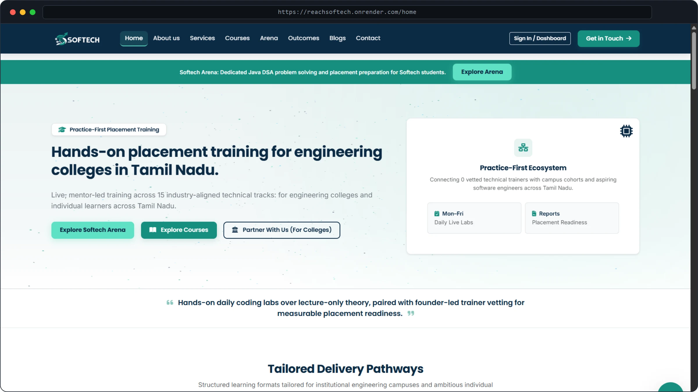

Softech — Technical Placement Portal
ProductionHigh-throughput corporate placement portal streamlining campus recruitment drives, live technical training, and institutional candidate evaluation pipelines.
Python
Flask 3
PostgreSQL
Render
CodeMirror
Full production web platform with automated code execution and administrative evaluation drives.
I build portals like this for clients — email me.